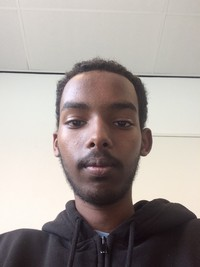

over mij
mijn naam is mohamed qalinle, ik ben 16 jaar oud en ik woon in giessenburg.ik doe de opleiding ict applicatie en mediaontwikkelaar op het da vinci college in gorinchem. ik heb deze opleiding gekozen, omdat ik geïnteresseerd ben in programmeren. ook ben ik door de open dag van de opleiding meer geÏnteresseerd geraakt. ik denk aan de gevolgen van je huiswerk niet af hebben om gemotiveerd te blijven. vroeger was ik vaak laat met opdrachten in te leveren en nu probeer ik dat een boel te verminderen. daarmee bedoel ik dat ik alles optijd wil gaan inleveren. hiervoor zat ik op het fortes lyceum in gorinchem. daar heb ik niet echt iets geleerd wat belanrijk is voor mijn opleiding die ik nu doe. met uitzondering van vakken zoals nederelands, engels en rekenen/wiskunde. een bijbaantje heb ik niet gehad. bij mijn vooropleiding heb ik geleerd hoe je beter kan plannen wat handig kan zijn voor de opleiding, want je moet goed kunnen plannen in de ict.

hobby's